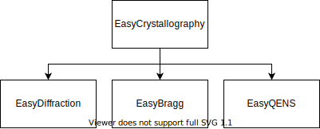

Implementation Technologies and API
EasyScience Workshop → RAL (29/09/22)
Simon Ward
Software Architect
European Spallation Source
simon.ward@ess.eu
IdleBrainZdev
Interactive Binder Version
Presentation Outline
Separation of Assets, What is EasyCore
The features.
Code Examples.
Where are we going.
Separation of Assets, What is EasyCore
Ahluwalia-law.com
What are the aims.
Ability to create components from building blocks
Components can be optimized against data.
Optimization is
NOT
just LM
Components can offload calculations to established libraries.
Components can be reused.
Access to modern concepts made easy.
The building blocks.
Descriptors
Named variables
Not necessarily numbers
Can not be used for optimization
Parameters
Based on Descriptors
Only numbers
Can be used for optimization
Base Objects
Used to create components
Can be composed of components and parameters
Knows everything it's composed of
Can be linked to an interface
Creating a Base Core Object
Creating an interface.
The Features
Ambreen Hasan, Unsplash license
Easy Interfacing
Shutterstock.
Calculation not limited by a single backend
Seamlessly switch
No need to learn specific calculators
Easy Optimization
LMfit
,
Bumps
and
DFO_LS
libraries are available
All methods of each libraries.
Multi dimensional datasets.
Multi objective optimization.
Fast to implement
Does not care about calculator
Easy Parallelization
X-Array - Apache-2.0 license.
Datasets can be stored in X-Array
Dask scheduling built in
Slicing and MPI
Reusable etc..

Components are reusable across techniques
Components can be dynamically added as needed
Unit support and conversion.
Json serialization and others supported.
Lets get dirty...
Preply.com Images, via Wikimedia Commons, CC-BY-2.0.
Example 1 - a Line :-/
We show 2 methods for object creation
We optimize values
We use different minimizer libraries and methods
Launch a binder Notebook
Example 2 - a 2D optimization
We use x-array
We optimize in 2D
Launch a binder Notebook
Example 3 - a real life example
A 4D optimization to a spin ladder model
We use x-array
We use ND visualization
We optimize to a 4D dataset
Launch a binder Notebook
The future
brickshop.eu
Enhancing JuPyter Notebook support
Use panel for better JuPyter integration
Auto widgets
Interactive web apps
Leading to advanced callbacks
Work in progress...
JAX - Compilation, ML and Optimization
Speed up calculations
ND Convolutions
ML applications?
Custom autograd optimization
Available in an easyCore branch
PyMC3 - Bayesian optimization and modeling
Use advanced Bayesian samplers
Advanced optimization statistics
Probability distributions, Gaussian process, Variational inference
Available in an easyCore branch


{kind=link}
{kind=link}